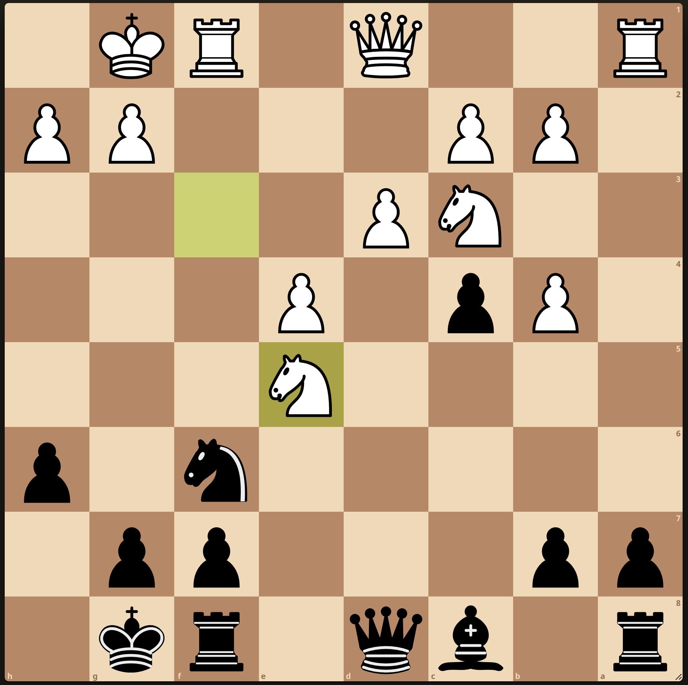
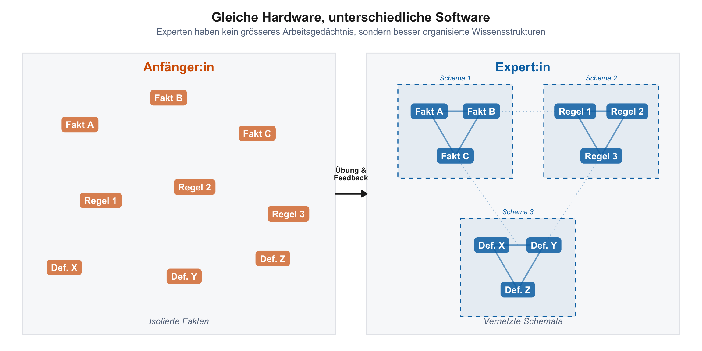
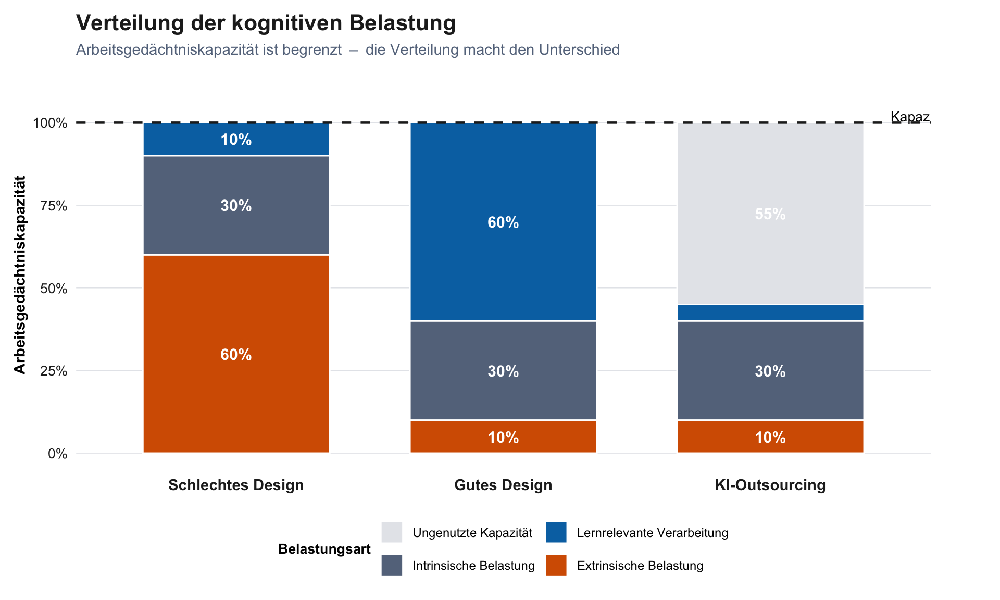
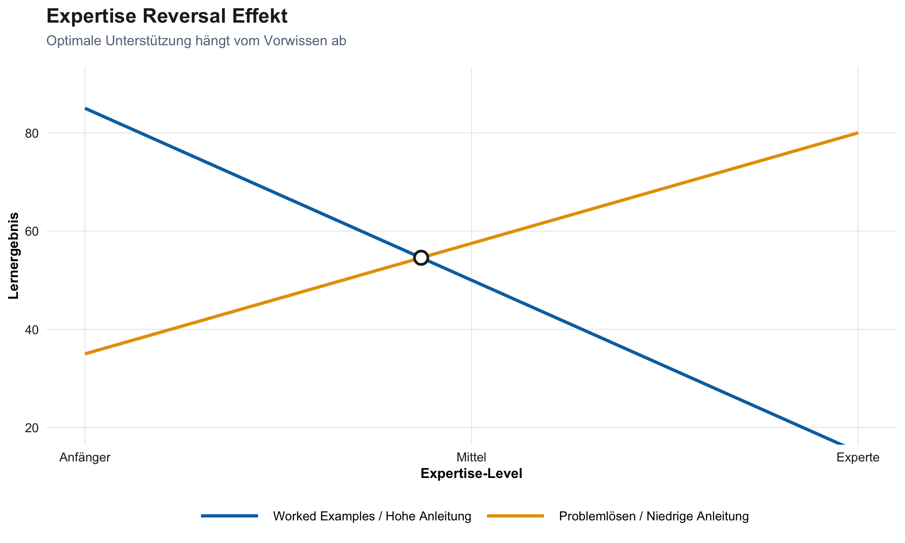
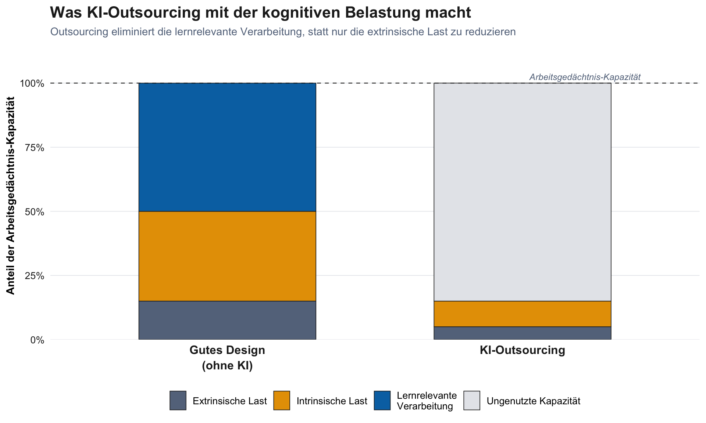
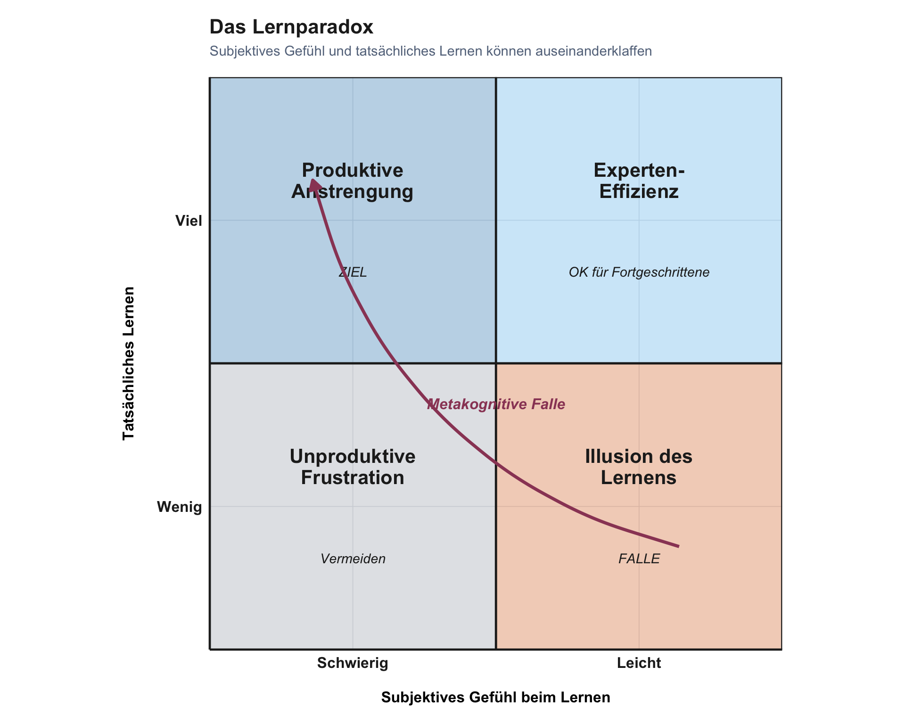
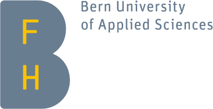

Warum sich effektives Lernen oft anstrengend anfühlt
20 Februar, 2026
KI verbessert Leistung bei kognitiven Aufgaben
Deskilling: Eigene Fähigkeiten verkümmern bei dauerhafter KI-Nutzung
Ohne Training setzen Menschen KI für ungeeignete Aufgaben ein
Was ist, wenn der kognitive Prozess beim Lernen wichtiger ist als das Ergebnis?
Wir unterscheiden zwischen (GEARY 2008; Sweller 2023):
Beispiele: Sprechen, Gesichtserkennung, soziale Interaktion
Beispiele: Lesen, Schreiben, Mathematik, Programmieren
Akademische Fähigkeiten erfordern explizite Anleitung und strukturiertes Üben (Kirschner, und and Clark 2006).
Experten haben besser organisierte Wissensstrukturen (Schemata), die Anfänger erst aufbauen müssen. Die kognitive Architektur (Arbeitsgedächtnis, Langzeitgedächtnis) ist bei allen Menschen gleich (Sweller 2023).

| Dimension | Anfänger | Experten |
|---|---|---|
| Sehen | Einzelne Teile | Bedeutungsvolle Muster |
| Verarbeiten | Schritt-für-Schritt | Automatische Prozeduren |
| Wissen | Isolierte Fakten | Vernetzte Schemata |

Gut vernetzte Schemata ermöglichen Transfer: Wissen auf neue, unbekannte Situationen anwenden.
Anfänger sehen Oberflächenmerkmale. Experten erkennen die Tiefenstruktur und können Wissen auf neue Probleme übertragen.
Transfer ist das eigentliche Ziel von Hochschulbildung. Wir unterrichten nicht, damit Studierende bekannte Aufgaben lösen. Wir unterrichten, damit sie mit unbekannten Situationen umgehen können.
Cognitive Load Theory (Sweller 2023)
Kernprinzip: Lernen erfordert Transfer vom Arbeits- ins Langzeitgedächtnis durch Schemabildung.
Intrinsisch
Komplexität des Lernstoffs selbst (Elementinteraktivität)
Begrenzt steuerbar (Sequenzierung)
Extrinsisch
Wie Material präsentiert wird
Durch Design minimierbar
Das Ziel: Raum schaffen für germane processing, die lernrelevante Verarbeitung, die Schemata aufbaut.

Abbildung 1: Die Gesamthöhe repräsentiert die fixe Arbeitsgedächtniskapazität. Entscheidend ist, wie viel Raum für lernrelevante Verarbeitung bleibt.
Die Gesamtlast darf das Arbeitsgedächtnis nicht überfordern.
Aber: Lernrelevante Verarbeitung (germane processing) ist essentiell für Expertise-Entwicklung.
Lösung: Extrinsische Last minimieren, um Raum für lernrelevante Verarbeitung zu schaffen.
Was Anfängern hilft, schadet Experten, und umgekehrt (Kalyuga 2009)
| Prinzip | Für Anfänger | Für Fortgeschrittene |
|---|---|---|
| Worked Examples | Reduziert kognitive Last | Redundante Information erzeugt extrinsische Last |
| Problem Solving | Überfordert Arbeitsgedächtnis | Verfeinert und vernetzt bestehende Schemata |
Praktische Regel: Beginne mit hoher Unterstützung und reduziere sie graduell mit wachsender Expertise (Fading).
KI-Tools bieten permanentes Scaffolding, das nie abgebaut wird.
Sie verletzen das Fading-Prinzip systematisch.

KI optimiert für Produktion statt Lernen
| Kognitive Last | Ohne KI | Mit KI (Outsourcing) |
|---|---|---|
| Intrinsisch | Bleibt konstant | Lernende begegnen der Komplexität nicht |
| Extrinsisch | Variabel | Minimiert |
| Lernrelevante Verarbeitung | Wird aufgebracht | Eliminiert |
Die Komplexität des Materials bleibt gleich, aber die Studierenden begegnen ihr nie.

Lernrelevante Verarbeitung wird nur eliminiert, wenn KI die Denkarbeit übernimmt (Outsourcing).
Wenn KI nach eigenem Versuch als Feedback-Werkzeug dient (Offloading), kann die lernrelevante Verarbeitung erhalten bleiben.
Die Reihenfolge entscheidet: Versuch → dann → KI-Feedback
Schemabildung erfordert aktive Verarbeitung im Arbeitsgedächtnis. Outsourcing eliminiert genau diese Verarbeitung:
Die Anstrengung selbst baut die Schemata auf, die Transfer ermöglichen.
Von Fakten zu automatisierten Prozeduren (Anderson 1982)
| Gedächtnissystem | Beschreibung | Beispiel |
|---|---|---|
| Deklarativ (“Wissen dass”) | Fakten, Regeln; bewusster Abruf | Regel kennen: “5 von beiden Seiten subtrahieren” |
| Prozedural (“Wissen wie”) | Automatisiert; schnelle Ausführung | Gleichung sehen → sofort umstellen |
Deklarativ → Übungszyklen mit Feedback → Prozedural
Abruf misst nicht nur Lernen, er erzeugt Lernen (Roediger und Butler 2011)
| Mechanismus | Wirkung |
|---|---|
| Stärkt Abrufrouten | Jeder erfolgreiche Abruf macht die Erinnerung zugänglicher |
| Identifiziert Lücken | Scheitern beim Abruf zeigt, was man nicht weiss |
| Fördert Elaboration | Rekonstruktion aktiviert verwandtes Wissen |
| Aktualisiert Kontext | Neue Abrufkontexte machen Wissen transferierbarer |
Deshalb funktionieren die Gedächtnis-Aktivierungen im Workshop: Nicht die Anstrengung selbst, sondern die durch den Abruf ausgelösten Prozesse festigen das Gelernte.
“Wenn es schwer ist, lerne ich nicht.”
“Wenn ich etwas produziere, lerne ich.”
“KI macht mich produktiver, also lerne ich mehr.”
Wie es sich anfühlt:
Was tatsächlich passiert (bei angemessener Herausforderung):
Der Trugschluss: “Wenn es schwer ist, lerne ich nicht”
Wie es sich anfühlt:
Was tatsächlich passiert:
Der Trugschluss: “Wenn ich etwas produziere, lerne ich”

Wir verwechseln Verarbeitungsflüssigkeit (wie leicht sich etwas anfühlt) mit Lernerfolg (Bjork 1994).
Produktive Anstrengung fühlt sich schwierig an, signalisiert aber, dass lernrelevante Prozesse aktiv sind.
Wenn es sich anstrengend anfühlt, ist das meistens ein gutes Zeichen.
Lernen = Schemabildung im Langzeitgedächtnis
Erfordert aktive kognitive Verarbeitung
Fühlt sich anstrengend an (metakognitive Falle)
Ziel: Transfer, also Wissen auf neue Situationen anwenden können

Berner Fachhochschule | Bern University of Applied Sciences